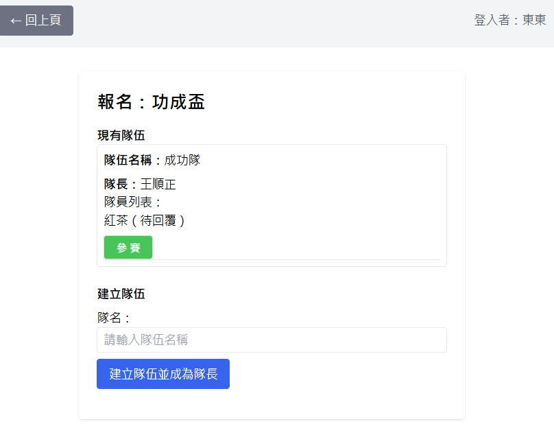

🏆 桌球比賽系統 - 組隊比賽功能說明書
📋 文件資訊
文件名稱：contest-detail.html
版本：1.1 (新增導航路徑說明)
更新日期：2025年5月
適用對象：系統管理員、比賽主辦方、隊長、參賽者、觀賽者
文件名稱：contest-detail.html
版本：1.1 (新增導航路徑說明)
更新日期：2025年5月
適用對象：系統管理員、比賽主辦方、隊長、參賽者、觀賽者
🎯 功能概述
組隊比賽功能是本系統的核心模組，提供完整的多隊伍競技管理解決方案。與一般挑戰賽不同，組隊比賽具備以下特色：
- 多隊參與：支援多支隊伍同時參與競賽
- 正式賽制：採用循環賽或淘汰賽制度（淘汰賽施工中）
- 完整管理：從報名到結果分析的全流程管理
- 靈活模式：支援集中式與分散式兩種比賽模式
- 自動化：對戰表自動產生、桌次智能分配
🏅 比賽類型差異
⚠️ 重要特色：本系統支援兩種獨特的比賽進行模式，這是與其他桌球管理系統的主要差異。
🎪 集中式比賽
定義：所有參賽隊伍在同一時間、同一地點進行比賽
- 時間安排：統一比賽日期與時段
- 場地需求：需要足夠的球桌同時進行多場比賽
- 桌次分配：系統自動分配桌次，避免衝突
- 現場管理：主辦方需要現場協調與監督
- 比賽節奏：快速完成所有對戰
🗓️ 分散式比賽
定義：對戰雙方自行約定時間完成比賽
- 時間彈性：參賽者可自由安排比賽時間
- 場地彈性：不限定特定場地進行
- 桌次管理：不需考慮桌次衝突問題
- 比賽週期：比賽時間可延長至數週或數月
- 約戰機制：透過系統約戰功能協調比賽時間
| 比較項目 | 集中式比賽 | 分散式比賽 |
|---|---|---|
| 適用場合 | 正式錦標賽、團體活動 | 長期聯賽、跨地區比賽 |
| 時間控制 | 嚴格統一 | 彈性自由 |
| 場地需求 | 集中場地、多球桌 | 分散場地皆可 |
| 管理複雜度 | 現場管理集中 | 過程管理分散 |
| 完成速度 | 一天內完成 | 數週至數月 |
💡 選擇建議：
- 選擇集中式：參賽者地理位置相近、希望快速完成比賽、有足夠場地資源
- 選擇分散式：參賽者時間難以統一、跨地區參與、希望延長比賽樂趣
⚙️ 建立比賽
⚠️ 權限要求：只有系統管理員或球場管理者可以建立比賽。
💡 重要說明：集中式與分散式比賽的操作方式完全相同，差異僅在於比賽進行的時間安排：
- 集中式：所有隊伍統一時間到場比賽
- 分散式：對戰雙方自行約定時間進行比賽
建立比賽步驟

1基本資訊設定
- 比賽名稱：建議包含日期和性質，如「2025年春季循環賽」
- 球場名稱：系統根據建立者身份自動設定
- 比賽規則：詳細說明比賽規則、參賽人員條件(年齡、級數、參與時段....)方式等
- 報名結束日：設定隊伍報名的截止日期
2參賽規模設定
- 預計隊數：預估參賽隊伍數量
- 每隊人數：每支隊伍的參賽人數
3賽制與場地設定
- 賽制類型：目前主要支援循環賽制
- 比賽球桌數：影響集中式比賽的桌次分配
- 總點數：每場對戰的局數設定
4每點賽制詳細設定

✅ 建立成功後：系統會自動跳轉到賽程控制區，比賽狀態設為「招募中」。
👥 隊伍管理
進入參賽區
🏠 參賽入口：參賽者需從首頁進入「參賽區」開始報名流程。
隊伍報名流程
參賽者進入比賽 → 建立隊伍 → 邀請隊員 → 隊員回應 → 隊長確認人員到位
1參加隊伍或建立隊伍

- 參加現有隊伍：可選擇加入已建立的隊伍（如有空缺）
- 建立新隊伍：在隊伍數未達上限時可建立新隊伍
- 每位參賽者只能在同一比賽中參加一支隊伍
- 建立者自動成為隊長，擁有隊伍管理權限
2隊長邀請隊員


- 隊長可邀請同球場的其他成員
- 邀請功能可在隊伍管理頁面中使用
- 系統會自動篩選可邀請的成員（排除已參賽或已被邀請者）
3隊員接收邀請
📱 邀請通知方式：
- 被邀請者在比賽頁面會看到邀請資訊
- 個人資訊頁面會顯示邀請提醒
- 首頁左上角行事曆圖示會顯示邀請數量


- 被邀請者可選擇「接受邀約」或「不克參加」
- 回應後系統會即時更新隊伍狀態
- 拒絕後仍可被重新邀請
4隊長管理功能
🔧 隊長專用功能：
- 查看成員狀態：即時了解邀請回應情況
- 移除成員：可移除已加入的隊員
- 最終確認：人數足夠時確認隊伍完成
5確認人員到位
⚠️ 關鍵步驟：當隊伍達到規定人數時，隊長會收到通知，必須進行最終確認。


✅ 確認完成：隊長點擊「人員已到位」後，該隊伍狀態變更為「已確認」，可參與對戰表產生。
隊伍狀態管理
- 招募中：隊伍正在招募成員
- 已確認：隊長已確認人員到位
- 可開始：符合產生對戰表的條件
📋 對戰表產生
⚠️ 重要時機：只有當所有隊伍都確認「人員已到位」時，管理員才能產生對戰表。產生後將無法更改隊伍名單。
產生條件檢查
1一般使用者確認狀態
📊 如何知道各隊準備狀況：參賽者可在比賽頁面查看所有隊伍的準備狀態。

✅ 準備完成標示：當所有隊長都確認人員到齊後，頁面會顯示「等待對戰表」狀態。
2管理員產生對戰表
🔧 管理員操作路徑：
- 方式一：從首頁 → 管理員專區 → 賽程控制區
- 方式二：從個人資訊頁面的通知連結

3對戰表產生過程
🔄 循環賽對戰表產生邏輯：
- 每支隊伍都會與其他所有隊伍對戰一次
- 系統智能分配輪次，